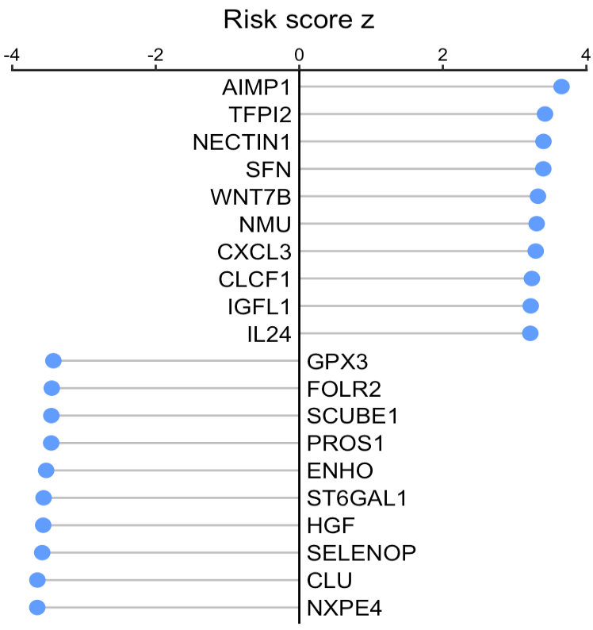
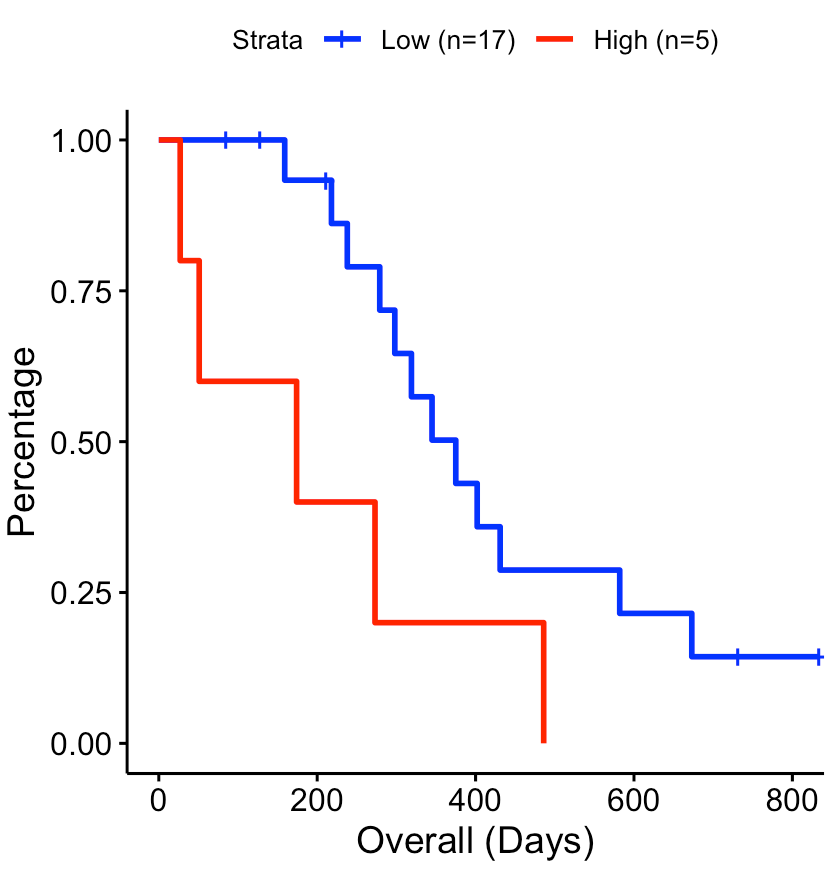

Clinical relavance of secreted proteins in a large patient cohort
Source:vignettes/bulkCohort.Rmd
bulkCohort.RmdThis tutorial demonstrates how to infer the signaling activity of secreted proteins from a large cohort, and then calculate their activity relevance with clinical data. The input expression values, from either RNA sequencing or MicroArray, should be transformed by log2(x+1). Of note, x could be FPKM, RPKM, or TPM for RNA-Seq data.
For this demonstration, we employ an immunotherapy cohort of pancreatic cancer patients. Using the SecAct framework, we will identify secreted proteins associated with immunotherapy efficacy.
Prepare expression data
This section shows how to read an expression matrix to R environment.
library(SecAct)
# prepare expression matrix
dataPath <- file.path(system.file(package="SecAct"), "extdata/")
expr <- read.table(paste0(dataPath,"Pancreatic_Nivolumab_Padron2022.logTPM.gz"), check.names=F)Infer secreted protein activity
We use SecAct.activity.inference to infer the activity
of >1000 secreted proteins across patient samples.
If your data have control samples (e.g., normal patients), you can
assign them to inputProfile_control. SecAct
would normalize each gene’s expression values with the control samples,
i.e., substracting the mean gene expression of control samples.
If not available, just set inputProfile_control=NULL
(default). SecAct would normalize the expression values of
each gene to zero mean across all input profiles. In other words, the
mean gene expression of all input profiles are regarded as control.
# infer activity; ~10 mins
res <- SecAct.activity.inference(inputProfile=expr, inputProfile_control=NULL)
# res$zscore stores activity
act <- res$zscore
# show activity
act[1:6,1:3]
## 2 3 6
## A1BG -27.104244 -24.572367 -13.2677965
## A2M 6.680395 6.097205 14.8814865
## A2ML1 4.369943 -2.016608 5.2873155
## AADACL2 -1.193300 -2.046660 -0.1879382
## ABHD15 -14.441596 -12.734870 -8.2587602
## ABI3BP 20.304553 14.203647 25.4980024Calculate clinical relevance
We next calculate the risk score z for each secreted protein by
linking their activity levels with clinical data. For the clinical file,
please make sure the name of the 1st and 2nd columns are “Time” and
“Event”, respectively. SecAct.coxph will conduct Cox
proportional hazard (PH) regression, with gene risk scores represented
as z-scores (Coef / StdErr) from the two-sided Wald test. For each
endpoint analysis, clinical covariates (e.g., age, gender, stage) were
considered in regression if available.
# read clinical infomation
clinical <- read.table(paste0(dataPath,"Pancreatic_Nivolumab_Padron2022.OS_Nivo+Sotiga+Chemo"))
head(clinical)
## Time Event Age Gender ECOG
## 8 834 0 55 1 0
## 13 28 1 60 0 1
## 15 273 1 69 0 0
## 22 159 1 69 0 1
## 24 569 0 62 0 0
## 25 264 1 66 1 1
# compute risk score
riskMat <- SecAct.coxph(act, clinical)
head(riskMat)
## risk score z p value
## A1BG -2.187803 0.028683943
## A2M -3.372297 0.000745439
## A2ML1 1.668025 0.095310824
## AADACL2 -1.960305 0.049960191
## ABHD15 -2.511890 0.012008638
## ABI3BP -1.679394 0.093075338Visualize risk score
User can visualize any secreted proteins of interest using
SecAct.lollipop.plot. Here, we select the top high and low
risk secreted proteins (SPs), which are associated with unfavorable and
favorable clinical outcomes, respectively.
# select the top secreted proteins
n <- 10
high.risk.SPs <- names(sort(riskMat[,"risk score z"],decreasing=T))[1:n]
low.risk.SPs <- names(sort(riskMat[,"risk score z"]))[1:n]
SPs <- c(high.risk.SPs, low.risk.SPs)
# user can assign any secreted proteins to SPs
# generate a vector
fg.vec <- riskMat[SPs,"risk score z"]
# visualize in lollipop plot
SecAct.lollipop.plot(fg.vec, title="Risk score z")
A positive value means the secreted protein is associated with worse survival while a negative value means the secreted protein is associated with better survival.
Draw survival plot
User can select a secreted protein of interest to draw its survival
curve using SecAct.survival.plot.
# Take secreted protein WNT7B as an example
riskMat["WNT7B",]
## risk score z p value
## 3.3252642698 0.0008833476
# visualize in survival plot
SecAct.survival.plot(act, clinical, "WNT7B", x.title="Overall (Days)")
The activity cutoff was selected by maximizing the difference between high and low activity patient groups.